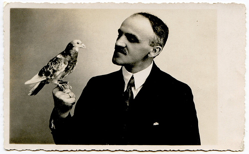

Monday, July the 12th, 2010
back to: title, date or indexes
Below is a scene from Dennis Beerpint's new “verse drama” Signor Ploppo In Conversation With A Bird, together with a short extract.

(Snapshot courtesy of unexpectedtales)
Dramatis Personae
SIGNOR PLOPPO, a man of parts
AMBROSE, a bird
AMBROSE : Bring me a jar of lemon curd!
PLOPPO : (Aside) Can such things be? A talking bird? (To Ambrose) Whyfore dost thou want lemon curd?
AMBROSE : Perchance this day my loins to gird.
PLOPPO : I did not know that birds have loins. However, if you give me some coins, I will go and buy a jar. There is a curd shop not so far.
AMBROSE : I beg thee, signor, use your own cash. (Aside) Should I praise his fine moustache? (To Ploppo) Your moustache is really great. Now hurry before it is too late!
PLOPPO : Fear not, the curd shop never shuts. But –
AMBROSE : But me no buts! Go and buy my lemon curd, or I shall be a distraught bird.
PLOPPO : (Aside) I loathe the prospect of a bird distraught. It goes against everything I was taught. My parents put it very well—“Be good to birds, or you'll go to hell.”
AMBROSE : (Aside) If I had hands, I'd clap with glee. This signor fears upsetting me. His childhood guilt, it haunts him yet. (To Ploppo) Make sure the lemon curd's thick-set. I cannot bear it thin and runny.
PLOPPO : Are you quite sure you have no money?
AMBROSE : As sure as eggs is eggs, signor. Now do not tarry anymore. Go to the shop and buy me curd, or I shall be a loin-limp bird.
PLOPPO : I will do as you ask and pay for your snack.
Exit PLOPPO
AMBROSE : The next scene is called “When Birds Attack!”
Hooting Yard on the Air, July the 16th, 2009 : “Those Wednesday Potato Nights” (starts around 10:46)
Hooting Yard on the Air, November the 18th, 2010 : “Dealey Plaza Craft Project” (starts around 13:15)
Hooting Yard on the Air, July the 28th, 2011 : “Dobson In A Mosh Pit” (starts around 19:54)